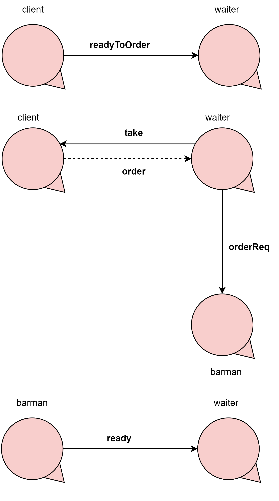

Introduction - Tea-room COVID-19
Remember our motto:
there is no code without a project, no project
without problem analysis and no problem without requirements
.
Il
manager di una sala da the (
tearoom) vorrebbe regolare l'accesso al servizio impiegando
un DDR robot
(
waiter).
La
tearoom è una stanza rettangolare che include:
- una porta di entrata (entrancedoor) per entrare nella stanza ed una di uscita
(exitdoor) per uscire;
- un numero N (N=2) di tavoli (teatable);
- una servicearea che include a sua volta un servicedesk al quale lavora un
barman;
- una hall provvista di un presencedetector, ad esempio un dispositivo (come un
sonar) che può rilevare
la presenza di una persona (o di qualche altra entità) davanti a se.
Il
waiter può muoversi liberamente lungo i bordi della stanza, poichè lungo il perimetro non ci
sono ostacoli.

User stories
Come
cliente:
- Intendo segnalare (notify) il mio interesse nell' accedere (entering) ad una sala
da tè sicura(safe tearoom), sedermi (sitting) a un tavolo libero, ordinare
(ordering)
del tè, consumarlo (consuming) (entro un certo tempo massimo maxstaytime) pagando
(paying) il servizio
con la mia carta di credito ed infine lasciare (leaving) la sala.
- Per safe tearoom, intendo una sala da tè con tavoli da tè puliti ed appositamente
distanziati; nella stanza sono presenti clienti aventi
temperatura corporea inferiore a 37.5 gradi centigradi.
- Posso segnare il mio interesse interagendo con il campanello smart (smartbell) posizionato vicino
all'ingresso (entrancedoor)
che misurerà automaticamente la mia temperatura corporea e manderà una richiesta al cameriere
(waiter), assegnandomi un identificativo univoco (clientidentifier).
- Se la mia temperatura corporea è idonea, ma la mia richiesta non può essere soddisfatta
immediatamente (visto che la stanza è piena), sarò informato (informed) dal waiter
su qual è il massimo tempo di attesa.
Come
manager:
- Intendo poter visualizzare lo stato corrente (current state) della tearoom usando
un browser connesso ad un server web
associato all'applicazione.
Requirements
Il
waiter deve eseguire le seguenti attività:
- accettare (accept) la richiesta di un cliente di entrare nella tearoom se è presente almeno
un tavolo (teatable) nello stato tableclean, i.e.
il tavolo è libero ed è stato propriamente pulito;
- informare (inform) il cliente del tempo massimo di attesa se non è presente nessun tavolo
in stato tableclean;
- raggiungere (reach) l'entrata (entrance door) e accompagnare (convoy) il
cliente al tavolo selezionato;
- prendere (take) l'ordine del cliente e trasmetterlo (utilizzando un dispositivo wifi) al
barman;
- servire (serve) il cliente quando il barman informa che il drink richiesto è
pronto;
- riscuotere (collect) il pagamento
- accompagnare (convoy) il cliente alla exit door quando ha finito la consumazione o
quando il maxstaytime è scaduto;
- pulire (clean) il tavolo appena liberato dal cliente;
- stazionare (rest) nella home quando non c'è niente da fare.
Dal momento che la sala può contenere al massimo
N clienti alla volta, il
waiter deve
ridurre il più possibile i tempi di attesa
delle richieste di ogni singolo cliente.
Optional Requirements: solo un cliente nella hall
Il
waiter deve aprire la
exitdoor solo quando la hall è libera, i.e. non deve aprire la
porta se la hall è già occupata da un cliente in attesa di entrare dalla
entrancedoor.
Requirement analysis
Problem analysis
Interazione ingresso client
|
|
Il client tramite un messaggio notify comunica allo smartbell di voler entrare nella stanza.
Lo smartbell misura la temperatura del client, la quale deve essere inferiore a 37.5°C.
Lo smartbell risponde (tempOk) al client informandolo se la sua temperatura rispetti le disposizioni sanitarie,
e quindi sia autorizzato a poter entrare.
Lo smartbell informa il waiter della presenza di un nuovo client inviando il clientidentifier appena generato.
Il waiter risponde allo smartbell se il nuovo client possa o meno entrare in sala. Tale risposta viene propagata al client,
il quale in caso affermativo aspetta il waiter per essere accompagnato ad un table, mentre in caso negativo si mette in attesa.
|
Interazione ordinazione client
|

|
Il waiter tramite un messaggio take chiede al client il suo ordine. Dopo aver raccolto la riposta (order) del client,
il waiter comunica al barman di preparare il drink richiesto.
Quando il barman ha finito di preparare il drink richiesto dal client, lo comunica al waiter tramite un ready.
|
Interazione richiesta uscita client
|
|
Il client informa (exitReq) il waiter di aver terminato la consumazione e di voler procedere al pagamento.
|
Interazione pagamento client
|
|
Il waiter tramite una collect richiede il pagamento al client, il quale gli risponde (payment) con l'importo dovuto.
Questa interazione, può avvenire successivamente all'interazione richiesta uscita client oppure dopo il superamento di maxstaytime
|
Test plans
Project
Testing
Deployment
Maintenance